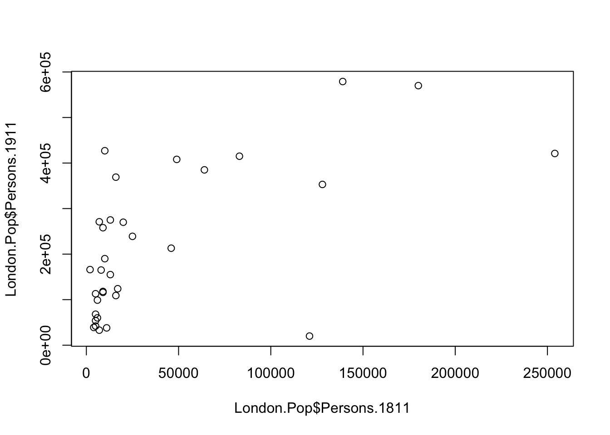
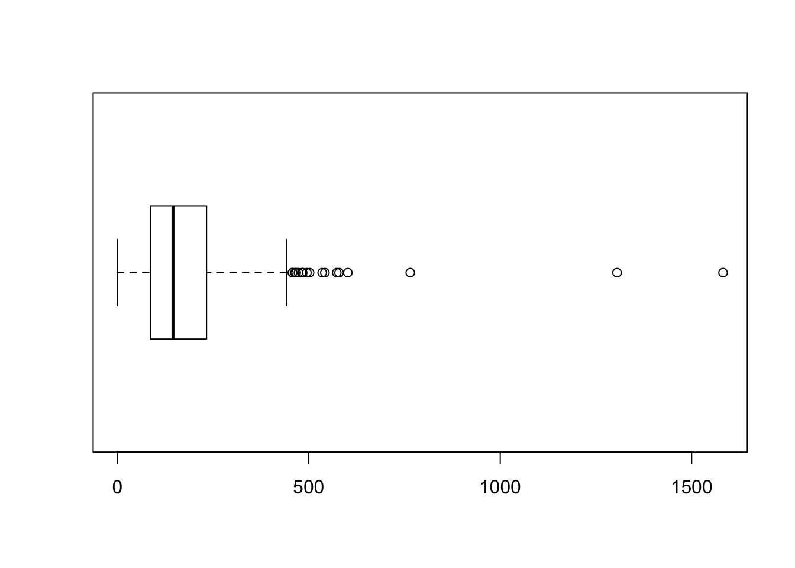

2 Examining data I
2.1 Introduction
Welcome to your second week of Introduction to Quantitative Research Methods. This week we will focus on examining data using measures of central tendency and measures of dispersion. These measures are collectively known as descriptive statistics. We will also talk about some basic data visualisation. Also, as by now everyone should be up and running with R, we will apply some of these descriptive measures onto some data. Nice!
This week is structured by 3 short videos, practical material that you need to work through in preparation for Thursday’s seminar, and a seminar task that you need to do in preparation for Thursday’s seminar.
Let’s get to it.
Video: Introduction W02
[Lecture slides] [Watch on MS stream]2.1.1 Reading list
Please find the reading list for this week below. We strongly recommend that you read the core reading material before you continue with the rest of this week’s material.
Core reading
- Lane et al., 2003, Chapter 3: Summarizing Distributions. In: Lane et al., 2003, Introduction to Statistics. Houston, Texas: Rice University. [Link]
Supplementary reading
- Diez et al., 2019, Chapter 2: Summarizing data. In: Diez et al., 2019, OpenIntro Statistics. Fourth Edition. Boston, Massachusetts: OpenIntro. [Link]
2.1.2 Q&A session
This week there is NO live Q&A session scheduled. Please post any questions you have on the POLS0008 Forum or ask them to your seminar leader during your live seminar on Thursday.
2.2 Measures of central tendency
Any research project involving quantitative data should start with an exploration and examination of the available data sets. This applies both to data that you have collected yourself and data that you have acquired in a different way, e.g. through downloading official UK Census and labour market statistics. The set of techniques that is used to examine your data in first instance is called descriptive statistics. Descriptive statistics are used to describe the basic features of your data set and provide simple summaries about your data. Together with simple visual analysis, they form the basis of virtually every quantitative data analysis.
Video: Measures of central tendency
[Lecture slides] [Watch on MS stream]For this tutorial we will initially continue to use the London.Pop object that we created during last week’s tutorial. You may still have it loaded into your R workspace if your RStudio Server session is still active. To check if you do, you can use the ls() command to get a list of all objects that are available in your RStudio session. Type this into the command line and see if London.Pop is printed.
If not you can simply reload it:
# set the working directory path to the folder you wish to use
# this would be the folder that you created during last week's practical
setwd('~/POLS0008')
# note the single / (\\ will also work)If you struggle with setting up your working directory and you need a reminder, have a look at how we did this last week!
# load csv file from working directory
London.Pop <- read.csv('census-historic-population-borough.csv')Use the head(), or View(), function to remind yourself of the structure of the London population data frame. You should see 25 columns of data.
Questions
- What is the difference between using
head()andView()to inspect your data? - Can you combine the functions
View()andhead()to browse only through a few lines of your data?
The mean() and median() were some of the first R functions we used last week to describe our Friends data frame Now we know a little more about these measures of central tendency, we can also apply them on our London.Pop data set. Let’s do this by focusing on London’s population in 2011.
# select the relevant columns
London.Pop2011 <- London.Pop[,c(1:2,24)]Questions
- Do you remember what the
c()function does? Why do we need to use thec()in this case? - Instead of using the
[ , ]syntax to slice our data frame, how can we create the sameLondon.Pop2011object by using the$syntax?
Now we can calculate our measures of central tendency using R’s built-in functions for the median and the mean.
# calculate the median of the 2011 population variable
median(London.Pop2011$Persons.2011)## [1] 254096# calculate the mean of the 2011 population variable
mean(London.Pop2011$Persons.2011)## [1] 247695.2Questions
- How do you explain that the median is larger than the mean for this variable?
R does not have a standard in-built function to calculate the mode. As we still want to show the mode, we create a user function to calculate the mode of our data set. This function takes a numeric vector as input and gives the mode value as output.
Note
You do not have to worry about creating your own functions, so just copy and paste the code below to create the get_mode() function.
# create a function to calculate the mode
get_mode <- function(x) {
# get unique values of the input vector
uniqv <- unique(x)
# select the values with the highest number of occurrences
uniqv[which.max(tabulate(match(x, uniqv)))]
}
# calculate the mode of the 2011 population variable
get_mode(London.Pop2011$Persons.2011)## [1] 7375Questions
- What is the level of measurement of our Persons.2011 variable? Nominal, ordinal, or interval/ratio?
- Even though we went through all the trouble to create our own function to calculate the mode, do you think it is a good choice to calculate the mode for this variable? Why? Why not?
Although R does most of the hard work for us, especially with the mean() and the median() function, it is a good idea to once go through the calculations of these two central tendency measures ourselves. Let’s cacluate the mean step-by-step and then verify our results with the results of R’s mean() function.
# get the sum of all values
Persons.2011.Sum <- sum(London.Pop2011$Persons.2011)
# inspect the result
Persons.2011.Sum## [1] 8173941# get the total number of observations
Persons.2011.Obs <- length(London.Pop2011$Persons.2011)
# inspect the result
Persons.2011.Obs## [1] 33# calculate the mean
Persons.2011.Mean <- Persons.2011.Sum / Persons.2011.Obs
# inspect the result
Persons.2011.Mean## [1] 247695.2# compare our result with R's built-in function
mean(London.Pop2011$Persons.2011) == Persons.2011.Mean## [1] TRUEGreat. Our own calculation of the mean is identical to R’s built-in function. Now let’s do the same for the median.
# get the total number of observations
Persons.2011.Obs <- length(London.Pop2011$Persons.2011)
# inspect the result
Persons.2011.Obs## [1] 33# order our data from lowest to highest
Persons.2011.Ordered <- sort(London.Pop2011$Persons.2011, decreasing=FALSE)
# inspect the result
Persons.2011.Ordered## [1] 7375 158649 160060 182493 185911 186990 190146 199693 206125 219396
## [11] 220338 231997 237232 239056 246270 253957 254096 254557 254926 258249
## [21] 273936 275885 278970 288283 303086 306995 307984 309392 311215 312466
## [ reached getOption("max.print") -- omitted 3 entries ]# get the number of the observation that contains the median value
Persons.Median.Obs <- (Persons.2011.Obs + 1)/2
# inspect the result
Persons.Median.Obs## [1] 17# get the median
Persons.2011.Median <- Persons.2011.Ordered[Persons.Median.Obs]
# inspect the result
Persons.2011.Median## [1] 254096# compare our result with R's built-in function
median(London.Pop2011$Persons.2011) == Persons.2011.Median## [1] TRUEQuestions
- For the calculation of the median: what does the
decreasing=FALSEparameter in thesort()function do? What happens if we change this todecreasing=TRUE? Does this affect the results for the calculation of the median? Why? Why not? - When extracting the median we using
[Persons.Median.Obs]and not[17]to select our value. Although the results are identical, what would be a good reason to select the first option over the second option? - When comparing our own calculation to R’s built-in function we are using two ‘equal to’ signs
==, what happens if we only use one ‘equal to’=sign? Why?
2.3 Simple plots
Before moving on to the second set of descriptive statistics, the measures of dispersion, this is a good moment to note that simple data visualisations are also an extremely powerful tool to explore your data. In fact, tools to create high quality plots have become one of R’s greatest assets. This is a relatively recent development since the software has traditionally been focused on the statistics rather than visualisation. The standard installation of R has base graphic functionality built in to produce very simple plots. For example we can plot the relationship between the London population in 1811 and 1911.
Note
Next week we will be diving deeper into data visualisation and making plots and graphs in R, but for now it is a good idea to already take a sneak peek at how to create some basic plots.
# make a quick plot of two variables of the London population data set
plot(London.Pop$Persons.1811,London.Pop$Persons.1911)
Questions
- What happens if you change the order of the variables you put in the
plot()function? Why? - Instead of using the
$to select the columns of our data set, how else can we get the same results?
The result of calling the plot() function, is a very simple scatter graph. The plot() function offers a huge number of options for customisation. You can see them using the ?plot help pages and also the ?par help pages (par in this case is short for parameters). There are some examples below (note how the parameters come after specifying the x and y columns).
# add a title, change point colour, change point size
plot(London.Pop$Persons.1811, London.Pop$Persons.1911, main='Quick Plot in R', col='blue', cex=2)
# add a title, change point colour, change point symbol
plot(London.Pop$Persons.1811, London.Pop$Persons.1911, main="Another Quick Plot in R", col='magenta', pch=22)
Note
For more information on the plot parameters (some have obscure names) have a look here: http://www.statmethods.net/advgraphs/parameters.html
Recap
In this section you have learnt how to:
- Calculate the mode, median, and mean of a variable in R.
- Make some simple scatter plots (in preparation for next week) to visualise your data.
2.4 Measures of dispersion
When exploring your data, measures of central tendency alone are not enough as they only tell you what a ‘typical’ value looks like but they do not tell you anything about all other values. Therefore we also need to look at some measures of dispersion. Measures of dispersion describe the spread of data around a central value (e.g. the mean, the median, or the mode). The most commonly used measure of dispersion is the standard deviation. The standard deviation is a measure to summarise the spread of your data around the mean. The short video below will introduce you to the standard deviation as well as to three other measures of dispersion: the range, the interquartile range, and the variance.
Video: Measures of dispersion
[Lecture slides] [Watch on MS stream]For the rest of this tutorial we will change our data set to one containing the number of assault incidents that ambulances have been called to in London between 2009 and 2011. You will need to download a prepared version of this file called: ambulance-assault.csv and upload it to your working directory. It is in the same data format (csv) as our London population file so we use the read.csv() command again.
File download
| File | Type | Link |
|---|---|---|
| Assault Incidents London | csv |
Download |
# load csv file from working directory
London.Ambulance <- read.csv('ambulance-assault.csv')# inspect the results
head(London.Ambulance)## BorCode WardName WardCode WardType Assault_09_11
## 1 00AA Aldersgate 00AAFA Prospering Metropolitan 10
## 2 00AA Aldgate 00AAFB Prospering Metropolitan 0
## 3 00AA Bassishaw 00AAFC Prospering Metropolitan 0
## 4 00AA Billingsgate 00AAFD Prospering Metropolitan 0
## 5 00AA Bishopsgate 00AAFE Prospering Metropolitan 188
## 6 00AA Bread Street 00AAFF Prospering Metropolitan 0# inspect the size of the data set
nrow(London.Ambulance)## [1] 649You will notice that the data table has 5 columns and 649 rows. The column headings are abbreviations of the following:
| Column heading | Full name | Description |
|---|---|---|
| BorCode | Borough Code | London has 32 Boroughs (such as Camden, Islington, Westminster, etc.) plus the City of London at the centre. These codes are used as a quick way of referring to them from official data sources. |
| WardName | Ward Name | Boroughs can be broken into much smaller areas known as Wards. These are electoral districts and have existed in London for centuries. |
| WardCode | Ward Code | A statistical code for the wards above. |
| WardType | Ward Type | A classification that groups wards based on similar characteristics. |
| Assault_09_11 | Assault Incidents | The number of assault incidents requiring an ambulance between 2009 and 2011 for each ward in London. |
Let’s start by calculating two measures of central tendency by using the median() and mean() functions.
# calculate the median of the assault incident variable
median(London.Ambulance$Assault_09_11)## [1] 146# calculate the mean of the assault incident variable
mean(London.Ambulance$Assault_09_11)## [1] 173.4669Questions
- How do you explain that the mean is larger than the median for this variable?
Great. Let’s now calculate some measures of dispersion for our data: the range, the interquartile range, and the standard deviation. The calculation of the range is very straightforward as we only need to subtract the the minimum value from the the maximum value. We can find these values by using the built-in min() and max() functions.
# get the minimum value of the assault incident variable
min(London.Ambulance$Assault_09_11)## [1] 0# get the maximum value of the assault incident variable
max(London.Ambulance$Assault_09_11)## [1] 1582# calculate the range
1582 - 0## [1] 1582# or in one go
max(London.Ambulance$Assault_09_11) - min(London.Ambulance$Assault_09_11)## [1] 1582Questions
- Why do we get a value of
0when executing ourmin()function? - What does this range mean?
The interquartile range requires a little bit more work to be done as we now need to work out the values of the 25th and 75th percentile.
Note
A percentile is a score at or below which a given percentage of your data points fall. For example, the 50th percentile (also known as the median!) is the score at or below which 50% of the scores in the distribution may be found.
# get the total number of observations
London.Ambulance.Obs <- length(London.Ambulance$Assault_09_11)
# inspect the result
London.Ambulance.Obs## [1] 649# order our data from lowest to highest
London.Ambulance.Ordered <- sort(London.Ambulance$Assault_09_11, decreasing=FALSE)
# inspect the result
London.Ambulance.Ordered## [1] 0 0 0 0 0 0 0 0 0 0 0 0 0 0 0 0 10 18 19 21 22 25 28
## [24] 28 28 29 30 34 36 36
## [ reached getOption("max.print") -- omitted 619 entries ]# get the number ('index value') of the observation that contains the 25th percentile
London.Ambulance.Q1 <- (London.Ambulance.Obs + 1)/4
# inspect the result
London.Ambulance.Q1## [1] 162.5# get the number ('index value') of the observation that contains the 75th percentile
London.Ambulance.Q3 <- 3*(London.Ambulance.Obs + 1)/4
# inspect the result
London.Ambulance.Q3## [1] 487.5# get the 25th percentile
London.Ambulance.Ordered[163]## [1] 86# get the 75the percentile
London.Ambulance.Ordered[488]## [1] 233# get the interquartile range
233 - 86## [1] 147As explained in the short lecture video, we can also visually represent our range, median, and interquartile range using a box and whisker plot:
# make a quick boxplot of our assault incident variable
boxplot(London.Ambulance$Assault_09_11, horizontal=TRUE)
Questions
- There is a large difference between the range that we calculated and the interquartile range that we calculated. What does this mean?
- The 25th and 75th percentile in the example do not return integer but a fraction (i.e. 162.5 and 487.5). Why do we use 163 and 488 to extract our percentile values and not 162 and 487?
Now, let’s move to the standard deviation. Remember: this is one of the most important measures of dispersion and is widely used in all kinds of statistics. The calculation involves the following steps:
- Calculate the mean.
- Subtract the mean from each observation to get a residual.
- Square each residual.
- Sum all residuals.
- Divide by \(n-1\).
- Take the square root of the final number.
# calculate the mean
London.Ambulance.Mean <- mean(London.Ambulance$Assault_09_11)
# subtract the mean from each observation
London.Ambulance.Res <- London.Ambulance$Assault_09_11 - London.Ambulance.Mean
# square each residual
London.Ambulance.Res.Sq <- London.Ambulance.Res**2
# sum all squared residuals
London.Ambulance.Res.Sum <- sum(London.Ambulance.Res.Sq)
# divide the sum of all sqaured residuals by n - 1
London.Ambulance.Variance <- London.Ambulance.Res.Sum / (length(London.Ambulance$Assault_09_11) - 1)
# take the square root of the final number
London.Ambulance.Sd <- sqrt(London.Ambulance.Variance)
# standard deviation
London.Ambulance.Sd## [1] 130.3482There we go. We got our standard deviation! You probably already saw this coming, but R does have some built-in functions to actually calculate these descriptive statistics for us: range(), IQR(), and sd() will do all the hard work for us!
# range
range(London.Ambulance$Assault_09_11)## [1] 0 1582# interquartile range
IQR(London.Ambulance$Assault_09_11)## [1] 147# standard deviation
sd(London.Ambulance$Assault_09_11)## [1] 130.3482Note
Please be aware that the IQR() function may give slighlty different results in some cases when compared to a manual calculation. This is because the forumula that the IQR() function uses is slightly different than the formula that we have used in our manual calculation. It is noted in the documentation of the IQR() function that: “Note that this function computes the quartiles using the quantile function rather than following Tukey’s recommendations, i.e., IQR(x) = quantile(x, 3/4) - quantile(x, 1/4).”
Questions
- What does it mean that we have a standard deviation of 130.3482?
- Given the context of the data, do you think this is a low or a high standard deviation?
To make things even easier, R also has a summary() function that calculates a number of these routine statistics simultaneously. After running the summary() function on our assault incident variable, you should see you get the minimum (Min.) and maximum (Max.) values of the assault_09_11 column; its first (1st Qu.) and third (3rd Qu.) quartiles that comprise the interquartile range; its the mean and the median. The built-in R summary() function does not calculate the standard deviation. There are functions in other libraries that calculate more detailed descriptive statistics,
# calculate the most common descriptive statistics for the assault incident variable
summary(London.Ambulance$Assault_09_11)## Min. 1st Qu. Median Mean 3rd Qu. Max.
## 0.0 86.0 146.0 173.5 233.0 1582.0Recap
In this section you have learnt how to:
- Calculate the range, interquartile range, and standard deviation in R.
- Create a simple boxplot using the
boxplot()function. - Quickly get common descriptive statistics using the
summary()function.
2.5 Seminar
Please find the seminar task and seminar questions for this week’s seminar below.
Note
Please make sure that you have executed the seminar task and have answered the seminar questions before the seminar!
Seminar task
Using the London.Ambulance object:
- Create a new object / data set that only contains data for ward type Multicultural Metropolitan.
- Create a new object / data set that only contains data for ward type Prospering Metropolitan.
Note
Creating a new object from an existing object is called creating a subset of your data. There are many ways of creating a subset, but one way of doing it is by using the following syntax: London.Assault[London.Assault$WardType == 'Multicultural Metropolitan',].
For both new objects:
- Calculate the median, mean, range, interquartile range, and standard deviation for the Assault_09_11 variable.
- Create a boxplot of the Assault_09_11 variable.
Seminar questions
- Explain why each of these statistics are useful and what type of data are required to calculate them:
- Mode
- Median
- Mean
- Range
- Interquartile Range
- Standard Deviation
- Compare the results of the descriptive statistics you have calculated for your Multicultural Metropolitan object / data set with the results of the descriptive statistics you have calculated for you Prospering Metropolitan object / data set. What do these differences tell us? In which of these two ward types are the data more clustered? In which of these two ward types are the data more dispersed?
Seminar link
Seminars for all groups take place on Thursday morning. You can find the Zoom link to your seminar group on Moodle.
2.6 Before you leave
Save your R script by pressing the Save button in the script window. That is it for this week!